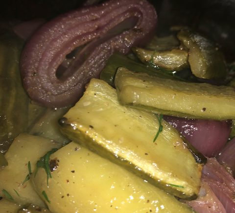

| Ingredients |
|---|
| 1 cucumber |
| salt |
| ½ tbsp olive oil |
| 1 red onion |
| 1 tbsp white wine vinegar |
| 2 tbsp fresh dill |
| freshly ground black pepper to taste |

Instructions
-
Wash the cucumber and chop off the top and tail. Half it cucumber cross-ways, then half each half length-ways. Use a small spoon to scrape out the seeds from each resulting long narrow quarter.
-
Place the quarter cucumbers on a plate skin-side-down and sprinkle very liberally with salt.
Let stand for 20 to 30 minutes.
Do not skip this step — the salt draws water out of the cucumber and prevents it from soaking up too much oil. The salt will be washed off later, so it really is OK to be generous with the salt at this stage.
"If the natural moisture content is not withdrawn beforehand, cucumbers exude so much water as they are heated that you usually end up with a tasteless mush and swear never to cook cucumbers again. Blanching for 5 minutes before cooking will remove unwanted water, but also most of the cucumber flavor. A preliminary sojourn in salt draws out the water and also the bitterness, if they are the bitter European type, yet leaves the flavor, which a little vinegar and salt accentuates"
-
Pre-heat the oven to 200°C/400°F.
-
Peel the onion and cut it into half-inch thick rings.
-
After 20 to 30 mins, rise the cucumber quarters and pat them dry.
-
Cut in half again length-wise, and then cut cross-ways into approximately 2" long chunks.
-
In a large bowl, toss the cucumber, oil, and onion, and season with black pepper. There is no need to add salt.
-
Roast for 40 minutes, stirring every 10 mins or so to ensure the vegetables don't dry out and burn.
-
While the vegetables are roasting, wash the fresh dill and chop it very coarsely.
-
After 40 minutes, take the vegetables out of the oven and before removing them from the roasting dish, splash with the vinegar to deglaze the roasting dish, add the dill, and stir.
Let stand for 1 minute until the dill wilts, then serve.
Required Equipment
-
A chopping board
-
A sharp knife
-
A spoon
-
An oven-proof dish
(glass or ceramic)
Glossary
- Deglazing
- The disolving of browned cooking residue from a cooking vessle to add flavour to a dish.
- Roasting
- The use of hot air (at least 150°C/300°F) to cook food. Food can be roasted over an open flame, in an oven, or using any other source of hot air.